소방설비기사(전기분야) (2022-04-24 기출문제)
1과목: 소방원론
1. 정전기로 인한 화재를 줄이고 방지하기 위한 대책 중 틀린 것은?
- 공기 중 습도를 일정값 이상으로 유지한다.
- 기기의 전기 절연성을 높이기 위하여 부도체로 차단공사를 한다.
- 공기 이온화 장치를 설치하여 가동시킨다.
- 정전기 축적을 막기 위해 접지선을 이용하여 대지로 연결작업을 한다.
(정답률: 55%)

2. 위험물안전관리법령상 위험물로 분류되는 것은?
- 과산화수소
- 압축산소
- 프로판가스
- 포스겐
(정답률: 38%)
3. 이산화탄소 20g은 약 몇 mol 인가?
- 0.23
- 0.45
- 2.2
- 4.4
(정답률: 41%)
4. 물질의 연소 시 산소 공급원이 될 수 없는 것은?
- 탄화칼슘
- 과산화나트륨
- 질산나트륨
- 압축공기
(정답률: 45%)
5. Fourier법칙(전도)에 대한 설명으로 틀린 것은?
- 이동열량은 전열체의 단면적에 비례한다.
- 이동열량은 전열체의 두께에 비례한다.
- 이동열량은 전열체의 열전도도에 비례한다.
- 이동열량은 전열체 내·외부의 온도차에 비례한다.
(정답률: 46%)
6. 할론 소화설비에서 Halon 1211 약제의 분자식은?
- CBr2ClF
- CF2BrCl
- CCl2BrF
- BrC2ClF
(정답률: 58%)
7. 제4류 위험물의 성질로 옳은 것은?
- 가연성 고체
- 산화성 고체
- 인화성 액체
- 자기반응성물질
(정답률: 60%)
8. 목재 화재 시 다량의 물을 뿌려 소화할 경우 기대되는 주된 소화효과는?
- 제거효과
- 냉각효과
- 부촉매효과
- 희석효과
(정답률: 61%)
9. 물이 소화 약제로써 사용되는 장점이 아닌 것은?
- 가격이 저렴하다.
- 많은 양을 구할 수 있다.
- 증발잠열이 크다.
- 가연물과 화학반응이 일어나지 않는다.
(정답률: 52%)
10. 분말소화약제 중 탄산수소칼륨(KHCO3)과 요소(CO(NH2)2)와의 반응물을 주성분으로 하는 소화약제는?
- 제1종 분말
- 제2종 분말
- 제3종 분말
- 제4종 분말
(정답률: 38%)
11. 다음 중 가연물의 제거를 통한 소화 방법과 무관한 것은?
- 산불의 확산방지를 위하여 산림의 일부를 벌채한다.
- 화학반응기의 화재 시 원료 공급관의 밸브를 잠근다.
- 전기실 화재 시 IG-541 약제를 방출한다.
- 유류탱크 화재 시 주변에 있는 유류탱크의 유류를 다른 곳으로 이동시킨다.
(정답률: 61%)
12. 건물화재의 표준시간-온도곡선에서 화재발생 후 1시간이 경과할 경우 내부 온도는 약 몇 ℃ 정도 되는가?
- 125
- 325
- 640
- 925
(정답률: 29%)
13. 물질의 취급 또는 위험성에 대한 설명 중 틀린 것은?
- 융해열은 점화원이다.
- 질산은 물과 반응 시 발열 반응하므로 주의를 해야 한다.
- 네온, 이산화탄소, 질소는 불연성 물질로 취급한다.
- 암모니아를 충전하는 공업용 용기의 색상은 백색이다.
(정답률: 33%)
14. 폭굉(detonation)에 관한 설명으로 틀린 것은?
- 연소속도가 음속보다 느릴 때 나타난다.
- 온도의 상승은 충격파의 압력에 기인한다.
- 압력상승은 폭연의 경우보다 크다.
- 폭굉의 유도거리는 배관의 지름과 관계가 있다.
(정답률: 41%)
15. 자연발화가 일어나기 쉬운 조건이 아닌 것은?
- 열전도율이 클 것
- 적당량의 수분이 존재할 것
- 주위의 온도가 높을 것
- 표면적이 넓을 것
(정답률: 32%)
16. 목조건축물의 화재특성으로 틀린 것은?
- 습도가 낮을수록 연소 확대가 빠르다.
- 화재진행속도는 내화건축물보다 빠르다.
- 화재최성기의 온도는 내화건축물보다 낮다.
- 화재성장속도는 횡방향보다 종방향이 빠르다.
(정답률: 55%)
17. 다음 물질 중 공기 중에서의 연소범위가 가장 넓은 것은?
- 부탄
- 프로판
- 메탄
- 수소
(정답률: 56%)
18. 플래시 오버(flash over)에 대한 설명으로 옳은 것은?
- 도시가스의 폭발적 연소를 말한다.
- 휘발유 등 가연성 액체가 넓게 흘러서 발화한 상태를 말한다.
- 옥내화재가 서서히 진행하여 열 및 가연성 기체가 축적되었다가 일시에 연소하여 화염이 크게 발생하는 상태를 말한다.
- 화재층의 불이 상부층으로 올라가는 현상을 말한다.
(정답률: 52%)
19. 연기에 의한 감광계수가 0.1m-1, 가시거리가 20~30m일 때의 상황으로 옳은 것은?
- 건물 내부에 익숙한 사람이 피난에 지장을 느낄 정도
- 연기감지기가 작동할 정도
- 어두운 것을 느낄 정도
- 앞이 거의 보이지 않을 정도
(정답률: 47%)
20. 프로판가스의 최소점화에너지는 일반적으로 약 몇 mJ 정도 되는가?
- 0.25
- 2.5
- 25
- 250
(정답률: 33%)
2과목: 소방전기회로
21. 정전용량이 각각 1㎌, 2㎌, 3㎌이고, 내압이 모두 동일한 3개의 커패시터가 있다. 이 커패시터들을 직렬로 연결하여 양단에 전압을 인가한 후 전압을 상승시키면 가장 먼저 절연이 파괴되는 커패시터는? (단, 커패시터의 재질이나 형태는 동일하다.)
- 1㎌
- 2㎌
- 3㎌
- 3개 모두
(정답률: 44%)
22. 그림과 같은 블록선도의 전달함수
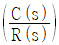
는?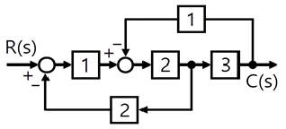
- 6/23
- 6/7
- 6/15
- 6/11
(정답률: 29%)
23. 그림의 단상 반파 정류회로에서 R에 흐르는 전류의 평균값은 약 몇 A 인가? (단, v(t) = 220√2sinωt(V), R＝16√2(Ω), 다이오드의 전압강하는 무시한다.)
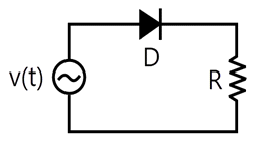
- 3.2
- 3.8
- 4.4
- 5.2
(정답률: 27%)
24. 3상 유도 전동기를 Y 결선으로 운전했을 때 토크가 TY이었다. 이 전동기를 동일한 전원에서 △결선으로 운전했을 때 토크(T△)는?
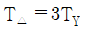
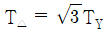
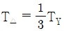
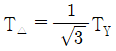
(정답률: 22%)
25. 제어요소가 제어 대상에 가하는 제어 신호로 제어장치의 출력인 동시에 제어 대상의 입력이 되는 것은?
- 조작량
- 제어량
- 기준입력
- 동작신호
(정답률: 27%)
26. 어떤 코일의 임피던스를 측정하고자 한다. 이 코일에 30V의 직류전압을 가했을 때 300W가 소비되었고, 100V의 실효치 교류전압을 가했을 때 1200W가 소비되었다. 이 코일의 리액턴스(Ω)는?
- 2
- 4
- 6
- 8
(정답률: 29%)
27. 적분 시간이 3sec이고, 비례 감도가 5인 PI(비례적분) 제어 요소가 있다. 이 제어 요소의 전달함수는?
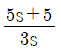
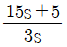
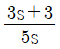
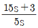
(정답률: 42%)
28. 100V에서 500W를 소비하는 전열기가 있다. 이 전열기에 90V 의 전압을 인가했을 때 소비되는 전력(W)은?
- 81
- 90
- 4⑤
- 450
(정답률: 33%)
29. 4극 직류 발전기의 전기자 도체 수가 500개, 각 자극의 자속이 0.01Wb, 회전수가 1800rpm일 때 이 발전기의 유도 기전력(V)은? (단, 전기자 권선법은 파권이다.)
- 100
- 200
- 300
- 400
(정답률: 25%)
30. 진공 중에서 원점에 10-8C의 전하가 있을 때 점(1, 2, 2)m에서의 전계의 세기는 약 몇 V/m 인가?
- 0.1
- 1
- 10
- 100
(정답률: 22%)
31. 정현파 교류전압 e1(t)과 e2(t)의 합(e1(t) + e2(t))은 몇 V 인가?
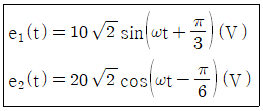
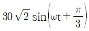
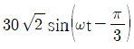
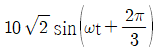
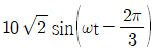
(정답률: 28%)
32. 60㎐의 3상 전압을 반파 정류하였을 때 리플(맥동) 주파수(㎐)는?
- 60
- 120
- 180
- 360
(정답률: 32%)
33. 테브난의 정리를 이용하여 그림 (a)의 회로를 그림 (b)와 같은 등가회로로 만들고자 할 때 Vth(V)와 Rth(Ω)은?
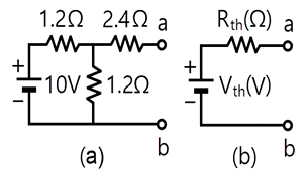
- 5V, 2Ω
- 5V, 3Ω
- 6V, 2Ω
- 6V, 3Ω
(정답률: 25%)
34. 어떤 전압계의 측정 범위를 12배로 하려고 할 때 배율기의 저항은 전압계 내부저항의 몇 배로 해야 하는가?
- 9
- 10
- 11
- 12
(정답률: 36%)
35. 각 상의 임피던스가 Z = 4＋j3(Ω)인 △결선의 평형 3상 부하에 선간전압이 200V인 대칭 3상 전압을 가했을 때 이 부하로 흐르는 선전류의 크기는 몇 A 인가?
- 40/3
- 40/√3
- 40
- 40√3
(정답률: 32%)
36. 시퀀스회로를 논리식으로 표현하면?
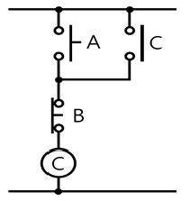
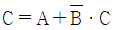
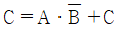
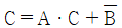
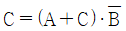
(정답률: 35%)
37. 그림의 회로에서 a-b 간에 Vab(V)를 인가했을 때 c-d 간의 전압이 100V이었다. 이때 a-b 간에 인가한 전압(Vab)은 몇 V인가?
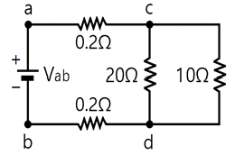
- 104
- 106
- 108
- 110
(정답률: 22%)
38. 균일한 자기장 내에서 운동하는 도체에 유도된 기전력의 방향을 나타내는 법칙은?
- 플레밍의 왼손 법칙
- 플레밍의 오른손 법칙
- 암페어의 오른나사 법칙
- 패러데이의 전자유도 법칙
(정답률: 36%)
39. 회로에서 저항 5Ω의 양단 전압 VR(V)은?
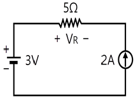
- -10
- -7
- 7
- 10
(정답률: 25%)
40. 다음의 논리식을 간단히 표현한 것은?
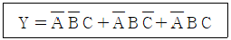
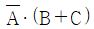
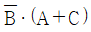
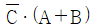
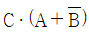
(정답률: 45%)
3과목: 소방관계법규
41. 다음 중 소방기본법령에 따라 화재예방상 필요하다고 인정되거나 화재위험경보시 발령하는 소방신호의 종류로 옳은 것은?
- 경계신호
- 발화신호
- 경보신호
- 훈련신호
(정답률: 22%)
42. 소방기본법령상 보일러 등의 위치·구조 및 관리와 화재예방을 위하여 불의 사용에 있어서 지켜야 하는 사항 중 보일러에 경유·등유 등 액체연료를 사용하는 경우에 연료탱크는 보일러 본체로부터 수평거리 최소 몇 m 이상의 간격을 두어 설치해야 하는가?
- 0.5
- 0.6
- 1
- 2
(정답률: 32%)
43. 다음은 소방기본법령상 소방본부에 대한 설명이다. ( )에 알맞은 내용은?
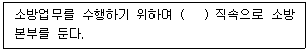
- 경찰서장
- 시·도지사
- 행정안전부장관
- 소방청장
(정답률: 32%)
44. 다음 소방기본법령상 용어 정의에 대한 설명으로 옳은 것은?
- 소방대상물이란 건축물, 차량, 선박(항구에 매어둔 선박은 제외) 등을 말한다.
- 관계인이란 소방대상물의 점유예정자를 포함한다.
- 소방대란 소방공무원, 의무소방원, 의용소방대원으로 구성된 조직체이다.
- 소방대장이란 화재, 재난·재해, 그 밖의 위급한 상황이 발생한 현장에서 소방대를 지휘하는 사람(소방서장은 제외)이다.
(정답률: 32%)
45. 소방기본법령상 상업지역에 소방용수시설 설치 시 소방대상물과의 수평거리 기준은 몇 m 이하인가?
- 100
- 120
- 140
- 160
(정답률: 34%)
46. 소방시설공사업법령상 일반 소방시설설계업(기계분야)의 영업범위에 대한 기준 중 ( )에 알맞은 내용은? (단, 공장의 경우는 제외한다.)
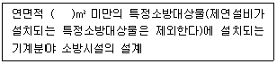
- 10000
- 20000
- 30000
- 50000
(정답률: 27%)
47. 소방시설공사업법령상 소방시설업의 등록을 하지 아니하고 영업을 한 자에 대한 벌칙기준으로 옳은 것은?
- 1년 이하의 징역 또는 1천만원 이하의 벌금
- 2년 이하의 징역 또는 2천만원 이하의 벌금
- 3년 이하의 징역 또는 3천만원 이하의 벌금
- 5년 이하의 징역 또는 5천만원 이하의 벌금
(정답률: 39%)
48. 위험물안전관리법령에서 정하는 제3류 위험물에 해당하는 것은?
- 나트륨
- 염소산염류
- 무기과산화물
- 유기과산화물
(정답률: 19%)
49. 화재예방, 소방시설 설치·유지 및 안전관리에 관한 법령상 자동화재탐지설비를 설치하여야 하는 특정소방대상물의 기준으로 틀린 것은?
- 공장 및 창고시설로서 「소방기본법 시행령」에서 정하는 수량의 500배 이상의 특수가연물을 저장·취급하는 것
- 지하가(터널은 제외한다)로서 연면적 600m2 이상인 것
- 숙박시설이 있는 수련시설로서 수용인원 100명 이상인 것
- 장례시설 및 복합건축물로서 연면적 600m2 이상인 것
(정답률: 33%)
50. 화재예방, 소방시설 설치·유지 및 안전관리에 관한 법령상 종합정밀점검 실시 대상이 되는 특정소방대상물의 기준 중 다음 ( ) 안에 알맞은 것은?
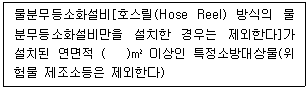
- 2000
- 3000
- 4000
- 5000
(정답률: 9%)
51. 소방기본법령상 특수가연물의 저장 및 취급의 기준 중 ( )에 들어갈 내용으로 옳은 것은? (단, 석탄·목탄류의 경우는 제외 한다.)
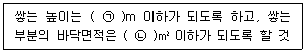
- ㉠ 15, ㉡ 200
- ㉠ 15, ㉡ 300
- ㉠ 10, ㉡ 30
- ㉠ 10, ㉡ 50
(정답률: 17%)
52. 위험물안전관리법령상 제4류 위험물을 저장·취급하는 제조소에 “화기엄금”이란 주의사항을 표시하는 게시판을 설치할 경우 게시판의 색상은?
- 청색바탕에 백색문자
- 적색바탕에 백색문자
- 백색바탕에 적색문자
- 백색바탕에 흑색문자
(정답률: 28%)
53. 위험물안전관리법령상 유별을 달리하는 위험물을 혼재하여 저장할 수 있는 것으로 짝지어진 것은?
- 제1류-제2류
- 제2류-제3류
- 제3류-제4류
- 제5류-제6류
(정답률: 21%)
54. 화재예방, 소방시설 설치·유지 및 안전관리에 관한 법령상 방염성능기준 이상의 실내장식물 등을 설치하여야 하는 특정소방대상물이 아닌 것은?
- 방송국
- 종합병원
- 11층 이상의 아파트
- 숙박이 가능한 수련시설
(정답률: 24%)
55. 화재예방, 소방시설 설치·유지 및 안전관리에 관한 법령상 건축허가 등을 할 때 미리 소방본부장 또는 소방서장의 동의를 받아야 하는 건축물 등의 범위기준이 아닌 것은?
- 노유자시설 및 수련시설로서 연면적 100m2 이상인 건축물
- 지하층 또는 무창층이 있는 건축물로서 바닥면적이 150m2 이상인 층이 있는 것
- 차고·주차장으로 사용되는 바닥면적이 200m2 이상인 층이 있는 건축물이나 주차시설
- 장애인 의료재활시설로서 연면적 300m2 이상인 건축물
(정답률: 22%)
56. 위험물안전관리법령상 관계인이 예방규정을 정하여야 하는 위험물 제조소등에 해당하지 않는 것은?
- 지정수량 10배의 특수인화물을 취급하는 일반취급소
- 지정수량 20배의 휘발유를 고정된 탱크에 주입하는 일반 취급소
- 지정수량 40배의 제3석유류를 용기에 옮겨 담는 일반취급소
- 지정수량 15배의 알코올을 버너에 소비하는 장치로 이루어진 일반취급소
(정답률: 19%)
57. 화재예방, 소방시설 설치·유지 및 안전관리에 관한 법령상 제조 또는 가공 공정에서 방염처리를 한 물품 중 방염대상물품이 아닌 것은?
- 카펫
- 전시용 합판
- 창문에 설치하는 커튼류
- 두께가 2mm 미만인 종이벽지
(정답률: 28%)
58. 화재예방, 소방시설 설치·유지 및 안전관리에 관한 법령상 무창층으로 판정하기 위한 개구부가 갖추어야 할 요건으로 틀린 것은?
- 크기는 반지름 30㎝ 이상의 원이 내접할 수 있을 것
- 해당 층의 바닥면으로부터 개구부 밑부분까지 높이가 1.2m 이내일 것
- 도로 또는 차량이 진입할 수 있는 빈터를 향할 것
- 화재 시 건축물로부터 쉽게 피난할 수 있도록 창살이나 그 밖의 장애물이 설치되지 아니할 것
(정답률: 33%)
59. 화재예방, 소방시설 설치·유지 및 안전관리에 관한 법령상 공동 소방안전관리자를 선임하여야 하는 특정소방대상물 중 고층 건축물은 지하층을 제외한 층수가 최소 몇 층 이상인 건축물만 해당되는가?
- 6층
- 11층
- 20층
- 30층
(정답률: 40%)
60. 화재예방, 소방시설 설치·유지 및 안전관리에 관한 법령상 “대통령령으로 정하는 특정소방대상물”의 관계인은 그 장소에 상시 근무하거나 거주하는 사람에게 소방훈련과 소방안전관리에 필요한 교육을 하여야 한다. 다음 “대통령령으로 정하는 특정소방대상물”에 대한 설명 중 ( )에 알맞은 내용은?
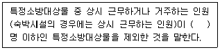
- 3
- 5
- 7
- 10
(정답률: 19%)
4과목: 소방전기시설의 구조 및 원리
61. 소방시설용 비상전원수전설비의 화재안전기준(NFSC 602)에 따라 저압으로 수전하는 제1종 배전반 및 분전반의 외함 두께와 전면판(또는 문) 두께에 대한 설치기준으로 옳은 것은?
- 외함 : 1.0mm 이상, 전면판(또는 문) : 1.2mm 이상
- 외함 : 1.2mm 이상, 전면판(또는 문) : 1.5mm 이상
- 외함 : 1.5mm 이상, 전면판(또는 문) : 2.0mm 이상
- 외함 : 1.6mm 이상, 전면판(또는 문) : 2.3mm 이상
(정답률: 14%)
62. 무선통신보조설비의 화재안전기준(NFSC 5⑤)에서 정하는 분배기·분파기 및 혼합기 등의 임피던스는 몇 Ω의 것으로 하여야 하는가?
- 10
- 30
- 50
- 100
(정답률: 28%)
63. 비상콘센트설비의 성능인증 및 제품검사의 기술기준에 따라 절연저항 시험부위의 절연내력은 정격전압 150V 이하의 경우 60Hz의 정현파에 가까운 실효전압 1000V 교류전압을 가하는 시험에서 몇 분간 견디는 것이어야 하는가?
- 1
- 10
- 30
- 60
(정답률: 9%)
64. 다음은 누전경보기의 형식승인 및 제품검사의 기술기준에 따른 표시등에 대한 내용이다. ( )에 들어갈 내용으로 옳은 것은?
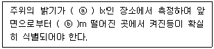
- ⓐ 150, ⓑ 3
- ⓐ 300, ⓑ 3
- ⓐ 150, ⓑ 5
- ⓐ 300, ⓑ 5
(정답률: 19%)
65. 무선통신보조설비의 화재안전기준(NFSC 5⑤)에 따라 무선통신보조설비의 누설동축케이블 및 동축케이블은 화재에 따라 해당 케이블의 피복이 소실된 경우에 케이블 본체가 떨어지지 아니하도록 몇 m 이내마다 금속제 또는 자기제등의 지지금구로 벽·천장·기둥 등에 견고하게 고정시켜야 하는가? (단, 불연재료로 구획된 반자 안에 설치하지 않은 경우이다.)
- 1
- 1.5
- 2.5
- 4
(정답률: 6%)
66. 비상콘센트설비의 화재안전기준(NFSC 504)에 따라 비상콘센트용의 풀박스 등은 방청도장을 한 것으로서, 두께 몇 mm 이상의 철판으로 하여야 하는가?
- 1.0
- 1.2
- 1.5
- 1.6
(정답률: 25%)
67. 자동화재탐지설비 및 시각경보장치의 화재안전기준(NFSC 203)에서 정하는 불꽃감지기의 시설기준으로 틀린 것은?
- 폭발의 우려가 있는 장소에는 방폭형으로 설치할 것
- 공칭감시거리 및 공칭시야각은 형식승인 내용에 따를 것
- 감지기를 천장에 설치하는 경우에는 감지기는 바닥을 향하여 설치할 것
- 감지기는 화재감지를 유효하게 감지할 수 있는 모서리 또는 벽 등에 설치할 것
(정답률: 14%)
68. 다음은 비상조명등의 우수품질인증 기술기준에서 정하는 비상조명등의 상태를 자동적으로 점검하는 기능에 대한 내용이다. ( )에 들어갈 내용으로 옳은 것은?
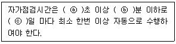
- ⓐ 15, ⓑ 15, ⓒ 15
- ⓐ 15, ⓑ 20, ⓒ 30
- ⓐ 30, ⓑ 30, ⓒ 30
- ⓐ 30, ⓑ 45, ⓒ 60
(정답률: 18%)
69. 자동화재탐지설비 및 시각경보장치의 화재안전기준(NFSC 203)에 따라 부착 높이가 4m 미만으로 연기감지기 3종을 설치할 때, 바닥면적 몇 m2 마다 1개 이상 설치하여야 하는가?
- 50
- 75
- 100
- 150
(정답률: 20%)
70. 비상방송설비와 자동화재탐지설비의 연동 시 동작 순서로 옳은 것은?
- 기동장치 → 증폭기 → 수신기 → 조작부 → 확성기
- 기동장치 → 조작부 → 증폭기 → 수신기 → 확성기
- 기동장치 → 수신기 → 증폭기 → 조작부 → 확성기
- 기동장치 → 증폭기 → 조작부 → 수신기 → 확성기
(정답률: 30%)
71. 유도등의 우수품질인증 기술기준에서 정하는 유도등의 일반구조에 적합하지 않은 것은?
- 축전지에 배선 등은 직접 납땜하여야 한다.
- 충전부가 노출되지 아니한 것은 사용전압이 300V를 초과할 수 있다.
- 외함은 기기 내의 온도 상승에 의하여 변형, 변색 또는 변질되지 아니하여야 한다.
- 전선의 굵기는 인출선인 경우에는 단면적이 0.75mm2 이상, 인출선 외의 경우에는 면적이 0.5mm2 이상이어야 한다.
(정답률: 27%)
72. 축광표지의 성능인증 및 제품검사의 기술기준에 따라 피난방향 또는 소방용품 등의 위치를 추가적으로 알려주는 보조역할을 하는 축광보조표지의 설치 위치로 틀린 것은?
- 바닥
- 천장
- 계단
- 벽면
(정답률: 40%)
73. 시각경보장치의 성능인증 및 제품검사의 기술기준에 따라 시각 경보장치의 전원부 양단자 또는 양선을 단락시킨 부분과 비충전부를 DC 500V의 절연저항계로 측정하는 경우 절연저항이 몇 ㏁ 이상이어야 하는가?
- 0.1
- 5
- 10
- 20
(정답률: 20%)
74. 누전경보기의 형식승인 및 제품검사의 기술기준에서 정하는 누전경보기의 공칭작동전류치(누전경보기를 작동시키기 위하여 필요한 누설전류의 값으로서 제조자에 의하여 표시된 값을 말한다.)는 몇 ㎃ 이하이어야 하는가?
- 50
- 100
- 150
- 200
(정답률: 16%)
75. 다음은 자동화재속보설비의 속보기의 성능인증 및 제품검사의 기술기준에 따른 속보기에 대한 내용이다. ( )에 들어갈 내용으로 옳은 것은?
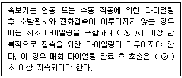
- ⓐ 10, ⓑ 30
- ⓐ 15, ⓑ 30
- ⓐ 10, ⓑ 60
- ⓐ 15, ⓑ 60
(정답률: 28%)
76. 단독경보형감지기에 대한 설명으로 틀린 것은?
- 단독경보형감지기는 감지부, 경보장치, 전원이 개별로 구성되어 있다.
- 화재경보음은 감지기로부터 1m 떨어진 위치에서 85dB 이상으로 10분 이상 계속하여 경보할 수 있어야 한다.
- 단독경보형감지기는 수동으로 작동시험을 하고 자동복귀형 스위치에 의하여 자동으로 정위치에 복귀하여야 한다.
- 작동되는 감지기는 작동표시등에 의하여 화재의 발생을 표시하고, 내장된 음향장치의 명동에 의하여 화재경보음을 발하여야 한다.
(정답률: 11%)
77. 비상방송설비의 음향장치는 정격전압의 몇 % 전압에서 음향을 발할 수 있는 것으로 하여야 하는가?
- 80
- 90
- 100
- 110
(정답률: 48%)
78. 소방시설용 비상전원수전설비의 화재안전기준(NFSC 602)에 따라 소방회로배선은 일반회로배선과 불연성 벽으로 구획하여야 하나, 소방회로배선과 일반회로배선을 몇 ㎝ 이상 떨어져 설치한 경우에는 그러하지 아니하는가?
- 5
- 10
- 15
- 20
(정답률: 22%)
79. 경종의 우수품질인증 기술기준에 따라 경종에 정격전압을 인가한 경우 경종의 소비전류는 몇 mA 이하이어야 하는가?
- 10
- 30
- 50
- 100
(정답률: 13%)
80. 자동화재탐지설비 및 시각경보장치의 화재안전기준(NFSC 203)에 따라 감지기 상호 간 또는 감지기로부터 수신기에 이르는 감지기회로의 배선 중 전자파 방해를 받지 아니하는 쉴드선 등을 사용하지 않아도 되는 것은?
- R형 수신기용으로 사용되는 것
- 차동식 감지기
- 다신호식 감지기
- 아날로그식 감지기
(정답률: 14%)